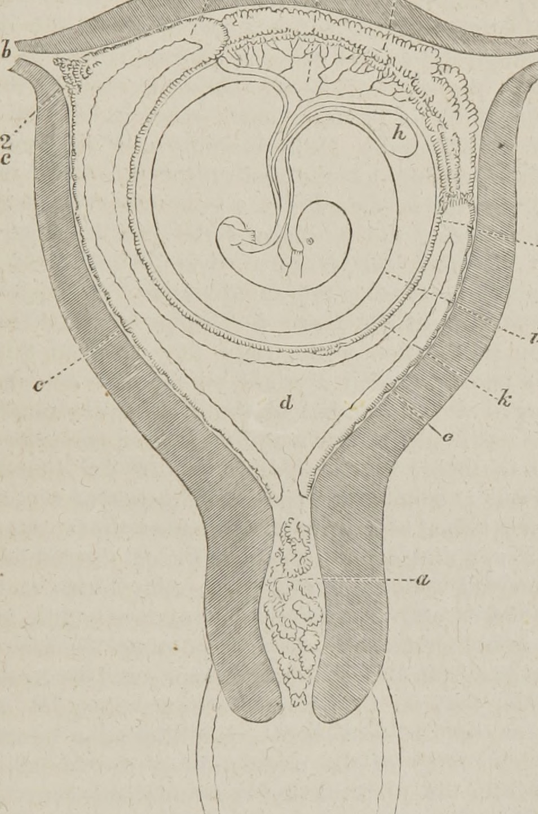

第 4 章
偷来的胎盘
让我们从一张超声影像开始。这不是一张普通的医学图像。屏幕上，十二周的人类胎儿蜷缩在子宫的黑暗里，像一颗刚具雏形的星球。脐带从胎儿腹部延伸出去，连接到子宫壁上那个深色的、海绵状的结构

——胎盘。
在超声探头的扫查下，你能看见血液在胎盘两侧流动：一侧是母体的，深红色，富氧，满载营养物质；另一侧是胎儿的，浅一些，带着代谢废物。两种血液在同一个器官里奔流，却从未直接混合。
它们被一层薄得几乎看不见的膜隔开——这层膜只有几个细胞的厚度，但它是整个怀孕过程中最关键的界面。它允许氧气、葡萄糖、氨基酸和水分子通过，同时精确地阻挡免疫细胞、细菌和绝大多数病毒。
这层膜就是合胞滋养层。它由单个细胞融合而成——不是简单的堆叠，不是紧挨着排列，而是将细胞膜溶解掉，把几十个、上百个细胞的细胞质融合成一整片连通的、多核的细胞层。在成年人体内，没有任何其他组织会这样做。神经细胞不会融合，肝细胞不会融合，皮肤细胞会层层堆叠但始终保持各自的独立性。
唯独在胎盘里，细胞心甘情愿地放弃了作为个体的边界，把自己变成一片活的地毯，铺在母亲和胎儿之间。为什么会这样？这个问题把一群分子生物学家困住了整整十五年。
故事要从1997年讲起。法国古斯塔夫·鲁西研究所的蒂埃里·海德曼团队正在筛查人类基因组中已知的内源性逆转录病毒序列。他们手头有一份清单——那是人类基因组计划早期阶段产生的数据，标注着所有与已知病毒基因相似的片段。大多数研究者对这些序列不感兴趣：它们是垃圾，是分子化石，是演化留给我们的八百万个断裂的句子。
但海德曼注意到一个细节：在人类第7号染色体的长臂上，有一条完整的、读码框未被打断的序列，它编码一个全长684个氨基酸的蛋白质，具有逆转录病毒env基因的所有典型特征。Env基因。这是逆转录病毒用来编码包膜蛋白的基因。包膜蛋白是病毒颗粒表面的糖蛋白，它像一把钥匙，能识别并插入宿主细胞膜上的特定受体，然后迫使病毒包膜与细胞膜融合，让病毒核心进入细胞内部。
HIV用它来入侵T细胞，流感病毒的血凝素蛋白是它的远亲，所有有包膜的病毒都依赖类似的融合机制。这是一个在暴力入侵中臻于完美的分子机器。但海德曼看到的这条序列，安静地躺在人类基因组里，显然已经在那里待了至少两千五百万年——那是人类世系与旧世界猴分化之前。它不再是病毒基因组的一部分，它的两端被哺乳动物序列包围，它已经变成了孟德尔遗传的一部分，从父母传给子女，代代相传。而且，它没有被沉默。
海德曼的团队检查了二十多种人类组织样本，发现在胎盘滋养层细胞中，这条基因的转录活性异常高，产生的大量信使RNA最终翻译成了蛋白质。他们把这蛋白质命名为“合胞素-1”。一支美国团队在独立筛选中发现了第二条类似的序列，位于第6号染色体，编码的蛋白质与合胞素-1有约百分之四十的同源性，也在胎盘中特异性表达。它被命名为“合胞素-2”。
后续研究证明，这两条序列源于两次独立的病毒感染事件：合胞素-1来自两千五百万年前插入祖先灵长类基因组的逆转录病毒，合胞素-2则来自更近的一次事件，大约四千万年前，但后来被拷贝到了第6号染色体上，继续在胎盘里被激活。现在，桥梁合龙了。逆转录病毒的env基因，原本是病毒用来强行打开宿主细胞大门的撬棍，在两次独立的古老感染中被送进了原始灵长类的生殖细胞，随后被演化征用，变成了胎盘细胞融合的关键工具。
这个发现击穿了所有教科书对病毒与宿主关系的定义。病毒不只是在感染我们，它们在建造我们。要理解这个机制有多精妙，你需要先知道细胞融合在自然界中其实是一件极其危险的事。
细胞膜是生命的边界，它把细胞质与外部环境隔开，维持着精确的离子浓度差、蛋白质分布和信号通路。两个细胞融合，意味着两套细胞骨架要重新组织，两套内质网和高尔基体要协调工作，两套细胞核要保持和谐共存。稍有不慎，融合就会触发程序性死亡——细胞自杀，这是生物体清除异常细胞的安全机制。
因此，所有多细胞生物都演化出了严格的机制来防止非必要的细胞融合。神经细胞、肌肉细胞、上皮细胞，它们终其一生都保持着各自独立的细胞膜，只在极少数特化情况下才会发生受控的融合——比如骨骼肌的发育，比如受精过程中精卵的结合，以及哺乳动物胎盘的合胞滋养层。
胎盘细胞融合的独特之处在于它的规模和持续性。从胚胎着床的那一刻起，滋养层细胞就开始融合，整个孕期都在持续进行。融合后的多核细胞层覆盖在胎盘的绒毛表面，直接浸泡在母体血液中。这层融合细胞必须足够大、足够连续，才能构建一个完整的半透屏障——它不能让母体和胎儿的血液直接混合，否则免疫系统会攻击胎儿，但同时又要让所有营养物质和气体分子高效通过。
这是一项工程学上的奇迹，其核心建筑技术就是合胞素蛋白。2015年，结构生物学家终于解析出了合胞素蛋白的三维结构。当这张图像出现在学术会议上时，全场沉默了几秒钟。
合胞素的折叠方式与HIV的包膜蛋白gp41几乎完全一致：一个疏水的融合肽，一个七重复螺旋束，一个跨膜结构域。在病毒入侵的过程中，gp41会像弹簧刀一样弹出，将融合肽插入宿主细胞膜，然后螺旋束回折，将病毒包膜和细胞膜拉近，强迫它们融合。合胞素保留了这把弹簧刀的全部结构特征，但它被加上了精密的调控开关：它只在滋养层细胞表面表达，它的融合活性被限制在细胞之间，而不是细胞与病毒颗粒之间，它的表达时程由胎盘发育的激素信号精确控制。
换句话说，这把病毒留下的万能钥匙，被基因组改造了。它不再专开细胞膜的门锁，却变成了一把焊接枪，专门在胎盘细胞车间里把相邻的细胞膜熔接起来，建造生命交换的界面。你无法找到比这更干净的比喻——因为它不是比喻，它就是分子事件本身。
现在，让我们后退一步，把尺度拉回到一亿六千万年前。那时候，最早的哺乳动物已经在地球上生存了超过六千万年。它们体型小，昼伏夜出，在恐龙的阴影下过着谦卑的生活。
它们有一个关键特征区别于爬行动物祖先：它们产卵，但孵化出的幼崽需要哺乳。这是哺乳动物名字的来源——乳腺，一种分泌营养液的皮肤腺体，让母亲能够为幼崽提供出生后的营养支持。但乳腺不能解决所有问题。卵生哺乳动物——今天仍然存活的鸭嘴兽和针鼹——产下的卵很小，卵黄不足以支撑胚胎完全发育，孵化出的幼崽极度不成熟，需要在母亲的育儿袋中继续吸乳数月。
这不是一个高效的繁殖策略。卵在体外发育的这段时间，胚胎暴露在温度波动、捕食者和微生物的威胁中。如果胚胎能在母体内发育更长的时间，获得持续的氧气和营养供应，而不依赖有限的卵黄，那么幼崽出生时就能更大、更成熟，存活率更高。
这就是胎盘的意义。胎盘不是突然出现的，它是一系列渐进演化的产物。最早的羊膜动物——爬行动物、鸟类和哺乳动物的共同祖先——已经演化出了胚胎外膜，包括羊膜和绒毛膜，它们包裹胚胎，提供保护和气体交换。
一些现生爬行动物，如某些蜥蜴和蛇，已经演化出了初级的胎盘结构，胚胎在母体内发育一段时间后产下活体幼崽。但哺乳动物把胎盘推向了极致。
它们的胎盘不是简单的血管接触，而是深度的组织侵入：胚胎的滋养层细胞主动侵蚀母体子宫壁，与母体组织建立直接的血管连接，形成一个动态的、双向的物质交换界面。
这个界面需要融合细胞。为什么？因为单个细胞无法承受母体血液持续冲刷的剪切力，无法形成足够大的覆盖面积，无法精确控制通透性。只有融合成一片连续的多核细胞层，胎盘绒毛才能像手套一样紧密包裹住母体毛细血管，在数十平方厘米的表面积上同时进行气体交换、营养转运和废物清除。这层融合细胞——合胞滋养层——是所有有胎盘哺乳动物的共同特征。从老鼠到鲸鱼，从蝙蝠到大象，从人类到犰狳，每一次怀孕都依赖这层融合细胞。
那么，最早的有胎盘哺乳动物是如何获得细胞融合能力的？演化的标准答案是基因突变和自然选择。
某个祖先物种的某个基因发生了突变，使得某种原本参与细胞间连接的蛋白质获得了融合活性，然后自然选择筛选出那些胎盘更有效的个体，经过几百万代，融合机制逐渐完善。这个解释在逻辑上没有问题，但它有一个致命的困难：时间。分子系统发生学显示，有胎盘哺乳动物大约在一亿六千万年前开始分化，鸭嘴兽和针鼹的祖先在大约一亿八千万年前就与其他哺乳动物分道扬镳。这意味着，胎盘细胞融合机制必须在那段只有两千万年的窗口期内被演化出来——从零开始构建一个全新的、涉及精确调控的细胞融合机器。这在演化时间尺度上太快了。
更合理的解释是，演化没有从零开始。它征用了一件现成的工具。逆转录病毒包膜蛋白就是那件工具。它已经演化了几十亿年，经过无数次优化，能够高效地诱导细胞膜融合。它不需要被重新发明，只需要被驯化。
一次感染——某个古老的逆转录病毒进入了原始哺乳动物的生殖细胞，把env基因留在了基因组里。然后，这个基因在某个后代个体的胎盘组织中意外被激活了。
也许只是一个微小的突变，让env基因的启动子区域恰好包含了滋养层细胞转录因子的结合位点。也许只是恰好，这个基因的表达水平足够低，不至于触发免疫反应，但又足够高，产生了一些功能性蛋白。那个个体——我们不知道它长什么样，是长得像老鼠还是像鼩鼱——它的胎盘可能比同类稍微更有效一点。
胎儿着床更稳固，营养供应更充足，幼崽出生时体重更大，存活率略高。在接下来的一百万代中，自然选择不断打磨这把借来的工具：融合活性被调整到最适合胎盘发育的水平，表达时程被精确调控，免疫原性被降低，旁路效应被抑制，基因本身被拷贝、变异、再拷贝，最终产生了多个平行版本——就像我们在人类基因组中看到的合胞素-1和合胞素-2，它们来自两次独立的病毒捕获事件，各自在不同的胎盘细胞类型中工作。
这不是一个特例。后续的比较基因组学研究揭示了一个惊人的模式：在哺乳动物的不同支系中，合胞素基因被多次独立捕获。
老鼠的合胞素-A和合胞素-B来自与人类合胞素完全不同的逆转录病毒，大约在两千五百万年前插入鼠类祖先的基因组。兔子的合胞素-Ory1来自另一支病毒。食肉动物的合胞素-Car1来自又一支。甚至在有袋类动物——如负鼠——的基因组中，也发现了独立捕获的合胞素基因，在有袋类的短暂胎盘发育期表达。每一次，都是一次独立的病毒感染事件，一次独立的基因驯化，一次独立的器官创新。病毒不断地把融合工具递交给哺乳动物，哺乳动物不断地将它们收编入伍，建造那个支撑新生命的器官。
这揭示了演化中一个被长期低估的机制：不是所有的创新都来自基因复制的微小突变累积。有时候，创新来自水平的、跨越物种甚至跨越生命形式的基因转移。病毒，这些没有细胞、不能代谢、在生命定义边缘游走的实体，是基因创新的搬运工和加速器。它们在亿万年的时间里，把经过恶劣环境考验的分子工具带进宿主基因组，宿主再根据自己的需要加以改造。
这不是一个整洁的、渐进的树状演化图景，而是一张纠缠的、反复交叉的网络，病毒序列在其中穿梭，像看不见的织梭，把不同的演化支系编织在一起。
但这里有一个反直觉的问题需要回答：如果合胞素基因对胎盘发育如此关键，为什么它在不同哺乳动物支系中来自不同的病毒？这意味着，最早的有胎盘哺乳动物——所有胎盘动物的共同祖先——可能使用的是另一种融合机制，也许是某个动物自身的基因，也许是另一支更古老的病毒。在后续的演化中，不同支系独立地用新的病毒基因替换了原有的机制，或者增添了新的层次。这是一种“演化的层叠”：每一次病毒感染都可能带来新的功能模块，旧的模块被保留、修改或废弃，但最终形成的器官是多次基因捕获事件叠加的结果。
这也能解释为什么胎盘的结构在不同哺乳动物中差异如此之大。猪的胎盘是弥散型的，马的胎盘是绒毛膜型的，猫和狗的胎盘是带状型的，啮齿类和灵长类的胎盘是盘状型的。
这些差异可能反映了不同支系在不同时期捕获的不同病毒基因，以及它们与宿主原有基因的相互作用方式。胎盘不是一次创造出来的，而是被反复发明、反复修改，每次都用上了病毒提供的新零件。现在，让我们回到人类自身。你的基因组里有两条被证明具有功能的合胞素基因，它们都在胎盘中高效表达。
此外，还有至少六条被怀疑具有类似功能的内源性逆转录病毒env序列，散布在不同的染色体上，在胎盘的不同发育阶段和不同细胞类型中被激活。它们中的一些可能在早期妊娠中起作用，另一些可能在晚期妊娠中调节免疫耐受，还有一些可能已经退化，只剩下残破的读码框，但它们的启动子区域仍然被保留，可能参与基因调控网络。我们还不知道这些序列的确切功能。功能验证实验需要在人的胎盘组织中进行，这涉及伦理限制和技术挑战。
我们只知道，它们在那里，它们被转录，它们产生的蛋白质出现在正确的时间和正确的地点。这是演化的证据，也是演化的谜题。但这个故事中还有一个更深的层面。
合胞素基因的发现，不仅解释了胎盘如何获得细胞融合能力，也揭示了为什么怀孕在某些情况下会失败。先兆子痫——一种以高血压、蛋白尿和胎盘功能障碍为特征的妊娠并发症，影响着全球约百分之五的孕妇——其发病机制之一就是合胞素表达水平异常。
当合胞素-1的表达下调时，滋养层细胞融合不充分，胎盘绒毛发育不良，母体螺旋动脉重塑失败，导致胎盘灌注不足和胎儿缺氧。母体的身体感知到子宫内环境恶化，试图通过升高血压来增加胎盘血流，但这种代偿反应最终损伤了母体的血管内皮，引发全身性炎症反应。
另一种妊娠疾病——葡萄胎，是滋养层细胞异常增生的结果，这些细胞过度表达合胞素，形成了大量的融合细胞，但这些细胞无法正常构建胎盘绒毛结构，最终形成充满液体的囊泡，无法支持胎儿发育，并有恶变风险。还有研究表明，一些不明原因的复发性流产可能与合胞素基因的突变或表观遗传沉默有关。这些疾病不是病毒感染的直接后果，而是病毒留下的基因工具在数千万年后被不正常使用时发生的故障。
换句话说，我们每个人的生命，都依赖于一套借来的、古老的、经过复杂改造的分子机器的正常运转。当它运转良好时，我们出生；当它出故障时，我们可能永远不会到来。你可能会问：免疫系统为什么不攻击这些源自病毒的蛋白质？这正是演化最精妙的设计之一。合胞素蛋白在演化过程中积累了大量的糖基化修饰——糖分子像外衣一样包裹着蛋白质表面，遮蔽了可能被免疫系统识别的抗原表位。
此外，胎盘本身是一个免疫豁免器官：滋养层细胞不表达经典的MHC-I类分子，因此母体的细胞毒性T细胞无法识别它们。同时，滋养层细胞分泌多种免疫抑制因子，主动抑制周围的免疫反应。这些机制共同构建了一个精密的免疫豁免微环境，让胎儿——这个半异体的生命——能够在母体内安全发育九个月。而在这个微环境的构建中，合胞素蛋白本身也参与其中：研究表明，合胞素-1能够抑制母体T细胞的活化和增殖，直接参与免疫耐受的建立。病毒留下的工具，不仅建造了物理屏障，还帮助建立了免疫屏障。
这把我们带回到全书的核心命题：病毒不是生命的敌人，而是生命的引擎。在前面的章节里，我们看到海洋噬菌体每天裂解五分之一的海洋细菌，驱动着全球碳循环；我们看到人类基因组中百分之八的序列来自古老的病毒残骸。现在，我们看到了一个更直接、更私密的证据：病毒基因直接参与构建了我们每个人生命之初赖以生存的器官——胎盘。
没有那两次古老的病毒感染事件，灵长类的胎盘就不会是今天这个样子，我们可能根本不会存在。不是因为病毒杀死了我们的祖先，而是因为病毒提供了祖先们无法靠自己快速演化出来的关键创新。这并非孤例。
在更广泛的演化尺度上，病毒介导的基因水平转移，在真核生物演化中扮演了远比我们过去认识到的更核心的角色。植物光合作用中的光系统核心组件、线虫消化植物细胞壁的酶、寄生蜂用来改造寄主的共生病毒、章鱼能快速适应环境温度变化的RNA编辑系统——这些关键创新的蓝图，都曾由病毒作为矢量，在生命之网中传递。病毒是基因流动的快递员，它们打破了物种间原本坚固的基因隔离，让生命之树的根系在暗中彼此缠绕。
但你应当意识到，这不是一个设计好的过程。病毒没有意图，没有目的，它们只是在复制自己。基因组也不“知道”这些基因未来会有用。自然选择没有远见，它只筛选当前世代中具有微小优势的变异。那些病毒基因之所以被保留下来，不是因为它们将来能建造胎盘，而是因为在每一代中，携带这些基因的个体恰好比不携带的个体多留下了一点点后代。
最初，也许只是一点更有效的免疫抑制，让胚胎存活率提高了千分之一。后来，也许是一点更紧密的细胞接触，让营养转运效率提高了万分之五。这些微小的优势在数百万代的尺度上累积，最终把一把病毒入侵的撬棍改造成了生命诞生的基石。这需要时间。需要一亿六千万年。
需要无数次怀孕，无数次着床，无数次胎儿发育，无数个体出生、生存、繁殖或死亡。需要整个大陆的哺乳动物种群在气候变化、小行星撞击、大陆漂移和物种竞争中持续存活。当这些条件都满足时，盲目的变异和筛选就能从病毒留下的残骸中挖掘出宝藏，建造出只有生命才能建造的复杂结构。
现在，让我们回到那张超声影像。十二周的人类胎儿，身长不过五厘米，心脏却已经跳动了八个星期。它的手指和脚趾刚刚分开，眼睛还紧闭着，但大脑正以每分钟二十五万个的速度制造新的神经元。
它悬浮在羊水中，通过脐带与胎盘相连。在胎盘深处，成千上万的合胞素蛋白分子正在工作，维持着母体与胎儿之间那层薄薄的融合细胞膜。每一次母体心脏的搏动，都把富氧的血液泵入胎盘绒毛间隙，在那里，氧气穿过合胞滋养层，扩散进胎儿毛细血管，与血红蛋白结合，然后沿着脐静脉流向胎儿全身。每一次胎儿心脏的搏动，都把二氧化碳和代谢废物沿着相反方向送回母体循环，由母体的肺和肾脏代为清除。
这个交换过程每分钟发生数十次，每小时数百次，每天数千次，持续九个月。在你还是那个十二周胎儿的时候，这场无声的交换就在你的体内进行。你身体里的每一个碳原子、每一个氧原子、每一个氮原子，都曾经穿过那层由病毒基因构建的薄膜。你的生命，从最物质的层面，开始于一次病毒的馈赠。
一亿六千万年前，那只携带了逆转录病毒基因的原始哺乳动物，它不知道自己的基因组里刚刚被插入了一段外来的序列。它产下了一窝后代，其中一些继承了这段序列，它们活得稍微好一点，后代稍微多一点。然后，在一万代之后，这个优势在种群中扩散开来；在十万代之后，这段序列在基因组中固定下来；
在一百万代之后，它被改造得面目全非；在五百万代之后，它的一群后代——原始灵长类——正在树冠间跳跃，它们的胎盘里仍然活跃着这段序列的远亲。然后，在这条演化长河的某个时刻，你出现了，带着这段序列，带着它建造的器官，带着它四千万年来积累的所有修改和调试，在母体的子宫里生长。
这不是一个关于病毒胜利的故事，也不是一个关于宿主胜利的故事。这是一个关于纠缠的故事，关于生命如何在最意想不到的地方找到建筑材料，关于我们身体里那些被误认为是“自我”的分子，其实来自另一个实体，另一个曾经是敌人的实体，现在却成了我们存在的前提。